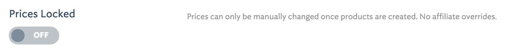
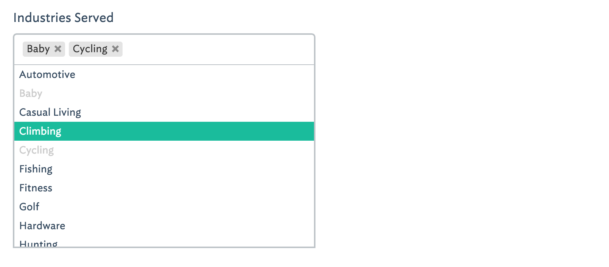
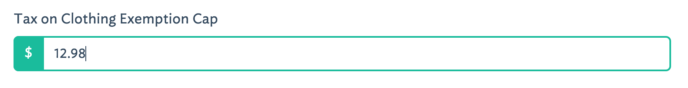
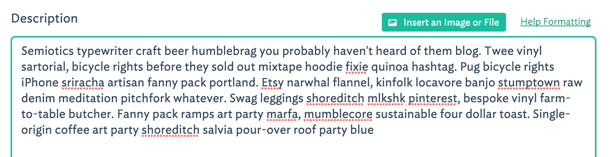
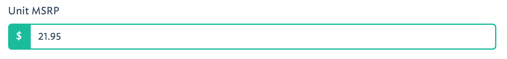
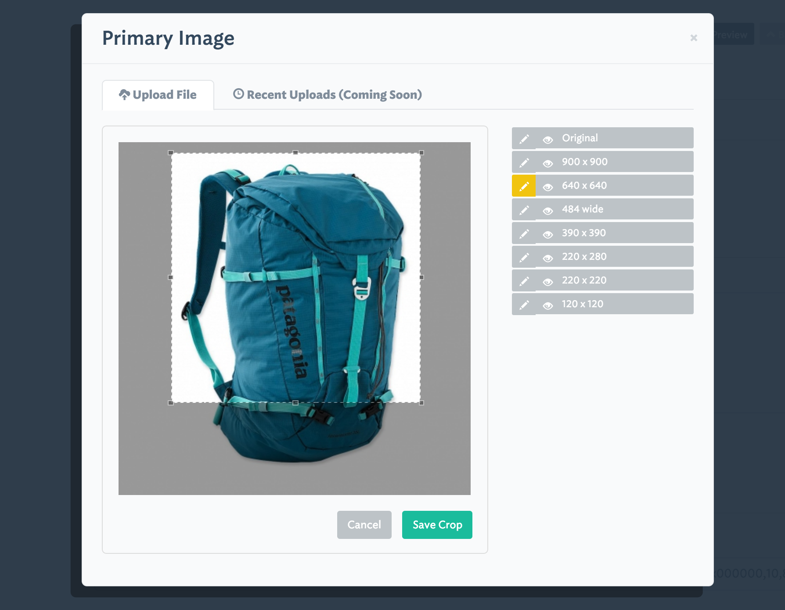

Element Options¶
The elements key of the array defined in any of the files at /config/packages/lifeboy/station represents the list of elements which are available to users of Station.
Generally, each element is mapped to a specific database field. However, this is not always the case. Some elements are “virtual”. See below for the full documentation on configuring elements.
Note
All options marked with a * are required!
Important: You do not need to create an id element in your panels. Station assumes that any panel which is mapped to a table * has an id field and it will auto-generate this field for you as your table’s primary key and index.
(key name) *¶
The key of each element (unless the element type is virtual) is the name of the database field of this panel’s table *.
<?php
'first_name' => [
'label' => 'First Name',
'type' => 'text',
...
],
In this example, first_name is the name of the database field.
label *¶
This is the user-facing “name” of the field. This name will appear in a number of places. (1) As the input label in the create and update form. (2) on the top of a list view column (if this element has been given list permissions) and (3) in validation error messages, when a user has not fulfilled validation requirements for this element.
<?php
'first_name' => [
'label' => 'First Name',
'type' => 'text',
...
],

type *¶
This is the “type” of element and there are numerous options. Your choice of element type is based primarily on which kind of browser input you wish to use, however it also influences the field type used in the auto-generated database migrations:
<?php
'is_active' => [
'label' => 'Activated?',
'type' => 'boolean',
...
],
text¶
- This will generate a VARCHAR(255) database field.
- The input for user manipulation is a simple
<input type="text">
integer¶
- This will generate a INT(12) database field.
- The input for user manipulation is a simple
<input type="text">
boolean¶

- This will generate a TINYINT(1) database field.
- The input for user manipulation is a toggle “on/off” switch (which masks a
<input type="checkbox">).
image¶
- This will generate a VARCHAR(255) database field.
- The input for user manipulation is a special image uploader w/ crop tool mechanism.
- See the sizes option for more details on configuration, sizing and cropping.

file¶
- This will generate a VARCHAR(255) database field.
- The input for user manipulation is a special file uploader modal dialog.
- You may also supply a
allowed_typesarray containing the file-extensions this will allow.- You may also supply a
directorystring containing the remote directory that uploaded files will save to.- The uploaded file name will be saved to the database field.
tags¶
- This will generate a VARCHAR(255) database field.
- The input for user manipulation is a special tagging interface.
- The field data is written to the database as comma delimited values.

select¶

multiselect¶

- This can only be used when a relationship with another table has been defined (see the data option).
- Data will be written to the database via a pivot table which is auto-generated via The Build Command.
- The input for user-manipulation uses the wonderful Chosen library which contains a taggable dropdown with search bar
radio¶
- This will generate a VARCHAR(255) database field.
- This can be used in conjunction with another table or with static data (see the data option).
- The input for user-manipulation uses enhanced radio buttons (masking standard
<input type="radio">inputs).
virtual¶
- Virtual type fields do not actually map to real database fields.
- No field will be generated from The Build Command.
- They are often used in conjunction with the
concatoption in order to create links in a list view which require one or more other fields from the same record.<?php 'permalink' => [ 'label' => 'Permalink', 'type' => 'virtual', 'concat' => '"<a href=\'http://www.domain.com/faq#answer-", id, "\' target=\'_blank\'>Preview</a>"', 'display' => 'L' ],
date / datetime¶
- These will generate ether a DATE() or DATETIME() database field.
- The input for user-manipulation is a calendar day-picker with or without a time-picker.

float¶
- This will generate a FLOAT(10,2) database field.
<?php 'tax' => [ 'label' => 'Tax on Clothing Exemption Cap', 'type' => 'float', 'format' => 'money', 'prepend' => '$', 'attributes' => '', 'rules' => '', 'display' => 'CRUD' ],The above example would produce:

textarea¶
- This will generate a TEXT() database field.
<?php 'description' => [ 'label' => 'Description', 'helper' => 'markdown', 'type' => 'textarea', 'rows' => 18, 'embeddable' => TRUE, 'display' => 'CRUD' ],
password¶
- This will generate a VARCHAR(255) database field.
- The input for user manipulation is a simple
<input type="password">
allow_upsize¶
This option is only available to elements using the type “image”. When set to true, a user uploading an image is allowed to use a smaller image size than the largest dimension expected. The image will be magnified to fit the largest dimension. See more on sizing using the sizes option.
append¶
This option allows you to append text to an element input field. The element must have 'type' => 'text'. This text will not be written to the database.
<?php
'subdomain' => [
'label' => 'Subdomain',
'type' => 'text',
'append' => '.domain.com'
...
],

attributes¶
The Build Command utilizes the wonderful Laracast Generators package to generate migrations for your panels. If you add pipe-delimited arguments to the attributes option, those arguments will be passed to the generator as specific schema.
<?php
'email' => [
'label' => 'Email',
'type' => 'text',
'attributes' => 'unique|index|default("foo@example.com")',
...
],
Note that attributes only affect the database schema and have no other affect on panel validation behaviors. To control panel validation behaviors use the rules option.
concat¶
This option is often used in conjunction with elements of 'type' => 'virtual' (read more about virtual). This option can be set to an array containing a mixture of strings and field names to create a new field, ideal for using in a panel’s list view.
<?php
'preview' => [
'label' => 'Preview',
'type' => 'virtual',
'concat' => '"<a href=\'http://", subdomain, ".domain.com\' target=\'_blank\'>Preview</a>"',
'display' => 'L'
],
This would render a link on every row of the panel’s list view. The link would be of the format: <a href="http://{subdomain}.domain.com">Preview</a>.
data¶
This option defines how the data for this element is populated. It is required whenever you use the element type select, multiselect, radio or subpanel.
1. Static Data Options¶
- You want to present a list of static options for a user to choose from
- You are using element
'type' => 'select'or'type' => 'radio'- The input options will be pre-populated using the array values you supply
- The
optionsarray values will be seen/chosen by the user, however the keys will be saved to the database.<?php 'favorite_animal' => [ 'label' => 'Your Favorite Animal', 'type' => 'radio', // <=== this works for `select` as well 'default' => '0', 'is_filterable' => TRUE, 'data' => [ 'options' => [ 0 => 'None', 1 => 'Pig', 2 => 'Ocelot', 3 => 'Llama', ] ] ],
2. Foreign Table Data Lookup¶
- You want to present a list of options for a user to choose from, but is populated using a foreign table’s data
- You are using element
'type' => 'select','type' => 'radio'or'type' => 'multiselect'- The input options will be pre-populated using the data from the foreign table
- The foreign table’s chosen
idvalue will be saved to this table or a pivot table.Example using
select:<?php 'favorite_animal' => [ 'label' => 'Favorite Animal', 'type' => 'select', 'data' => [ 'join' => TRUE, 'relation' => 'belongsTo', // <== This relationship is written to the auto-generated model 'table' => 'animals', 'display' => ['animals.name', ' ' ,'(', 'animals.genus', ' : ', 'animals.species', ')'], 'no_model' => TRUE // only use this if you want to avoid writing this relationship to the model ] ],Example using
multiselect:<?php 'favorite_animals' => [ 'label' => 'Favorite Animals', 'type' => 'multiselect', 'data' => [ 'join' => TRUE, 'relation' => 'belongsToMany', // <== This relationship is written to the auto-generated model 'table' => 'animals', 'pivot' => 'animals', 'display' => 'animals.name', 'order' => 'animals.name' ] ],It is important that you specify a
displayvalue so that Station knows which of the foreign table’s fields to use to display in the dropdown or on the radio buttons. Notice that you can provide an array fordisplaywhich will concatenate field names and your own strings. This allows you to create a display using multiple foreign table fields.
3. Subpanel Data¶
- You want to nest a subpanel within this panel so a user can create, update, delete, and reorder a foreign table’s data from within this panel!
- This makes foreign table data manipulation possible.
<?php 'comments' => [ 'label' => 'Comments', 'type' => 'subpanel', 'permissions' => 'CRUD', // <== User has all permissions on this subpanel 'data' => [ 'join' => TRUE, 'relation' => 'hasMany', 'table' => 'comments', 'key' => 'post_id' // <== This is the foreign key, which will be auto-generated by Station's build command ] ],When a subpanel is defined like this, Station will look for another panel configuration file called
comments.php. That panel is configured just as you would configure a non-nested panel. You can even use thereorderable_byoption in your subpanel so the user can reorder/sort the subpanel’s data right from the parent panel!Note: you do not need to create an element for the foreign key when you make your subpanel’s configuration file. Station will create it for you.
default¶
Use this to set a default value for an element. This value will be first selected in a create or update form.
<?php
'favorite_animal' => [
'label' => 'Your Favorite Animal',
'type' => 'text',
'default' => 'Panda',
...
],
disabled¶
When this option is set to true this element’s input will be rendered with a disabled attribute in the create and update view.
display¶
This option informs Station when to display this element. You may indicate one or more of the following letters: C.R.U.D.L.
<?php
C = Create
R = Read
U = Update
D = Delete
L = List
<?php
'favorite_animal' => [
'label' => 'Your Favorite Animal',
'type' => 'text',
'display' => 'CRUDL' // <=== This element will appear in all views & controls
...
],
'favorite_movie' => [
'label' => 'Your Favorite Movie',
'type' => 'text',
'display' => 'CRUD' // <=== This element will not appear in the list view
...
],
embeddable¶
This option, when set to true, enables inline embedding of images and documents within the body of an element of 'type' => 'textarea'.
<?php
'description' => [
'label' => 'Description',
'type' => 'textarea',
'rows' => 20,
'embeddable' => TRUE,
'sizes' => [
'original' => ['label'=>'Original'],
'journal-body-620x0' => ['label'=>'Full Column Width', 'size'=>'620x0'],
'journal-body-250x0' => ['label'=>'Partial Column Width', 'size'=>'250x0'],
]
],
You can (and should) set the sizes options to the sizes which you want any uploaded images to be resized to.

format¶
This is a helper option which will provide “masking” to your input field to help guide a user’s entry. There are currently two formats available:
phone
<?php 'mobile_phone' => [ 'label' => 'Mobile Phone #', 'type' => 'text', 'format' => 'phone', 'prepend_icon' => 'glyphicon glyphicon-earphone', ... ],This will provide special guidance for the user to enter properly formatted phone numbers.

money
<?php 'unit_msrp' => [ 'label' => 'Unit MSRP', 'type' => 'float', 'format' => 'money', 'prepend' => '$', ... ],This will provide special guidance for the user to enter properly formatted prices.

help¶
This options allows you to set some “helper” text which will display next to the element input in the create and update views.
<?php
'bio' => [
'label' => 'Company Bio',
'type' => 'textarea',
'help' => 'Optional. Just some brief, fun facts about your company',
...
],
helper¶
This option allows you to choose a pre-baked “help” functionality. There is currently only one option, markdown which is best when used with elements of 'type' => 'textarea'. When you choose the markdown option your users will see a “Help Formatting” link above the textarea. When clicked, a modal overlay will render containing a Markdown syntax cheat sheet.
<?php
'description' => [
'label' => 'Description',
'helper' => 'markdown',
'type' => 'textarea',
'rows' => 6,
'display' => 'CRUD'
],
is_filterable¶
When this option is set to true and the element has type select and it has a display value allowing it to be shown in the list view (L), then a filter dropdown will appear allowing users to filter the list view by a value present in the table. The dropdown even contains a search tool, compliments of the Chosen library.
permissions¶
This is only used with the elements of 'type' => 'subpanel'. This defines which permissions a user has on the subpanel items according to the following list of actions:
C = Create
R = Read
U = Update
D = Delete
<?php
'colors' => [
'label' => 'Product Colors',
'type' => 'subpanel',
'display' => 'CU',
'permissions' => 'C',
'data' => [
'join' => TRUE,
'relation' => 'hasMany',
'table' => 'colors',
'key' => 'product_id'
]
],
In the above example a user will be able to view the colors in the subpanel (according to the display option) however they have not been given permissions to do anything other than create new ones. They cannot delete or update because the letters D and U are not present.
prepend¶
This option allows you to prepend text to an element input field. The element must have 'type' => 'text'. This text will not be written to the database.
<?php
'subtotal' => [
'label' => 'Subtotal',
'type' => 'float',
'format' => 'money',
'prepend' => '$',
'display' => 'CRUD'
],
prepend_icon¶
This allows you to set a bootstrap glyphicon class name in order to prepend an icon to your elements input field. This only works with 'type' => 'text'.
<?php
'url' => [
'label' => 'Web Address',
'type' => 'text',
'prepend_icon' => 'glyphicon glyphicon-globe',
...
],

rows¶
This is only relevant for elements of 'type' => 'textarea'. This is a simple integer which defines how many rows of visible space will be applied to the <textarea> input. This is handy for when you want to encourage, or discourage long-form typing.
rules¶
This option configures the validation of an element. You must set the value to a pipe-delimited set of rules. The validation options include and are limited to the Laravel Validation Rules. You set the rules in exactly the same way that you would define them natively in Laravel.
<?php
'title' => [
'label' => 'Post Title',
'type' => 'text',
'rules' => 'required|unique,posts,title|between:3,125',
...
],
Note: When using the unique rule, Station uses a , while Laravel requires a :
sizes¶
This option allows you to specify one or more image sizes and locations for uploaded images. Upon upload, only the name of the uploaded file will be saved to your database. The image itself will be resized, cropped, and saved to the locations you specify. If you wish, you can specify global application defaults in “media_options” so that you do not need to repeat the same sizes and locations in every panel.
<?php
'logo' => [
'label' => 'Logo Image',
'help' => '(270 x 270 min)',
'type' => 'image',
'display' => 'CRUD',
'allow_upsize' => TRUE,
'sizes' => [
'original' => ['label'=>'Original'],
'logo-300x150' => ['label'=>'300 x 150','size'=>'300x150', 'letterbox' => '#FFFFFF'],
'logo-270x270' => ['label'=>'Fixed Width (270px)','size'=>'270x0'],
'logo-180x180' => ['label'=>'Square Thumbnail','size'=>'180x180'],
]
],
In the example above, there are 4 different sizes (including an untouched, original version) which will be created upon upload. An associative array defines how the original, uploaded image will be manipulated and transmitted to your CDN server. Note: currently only Amazon S3 is supported. Here is the breakdown on how to configure the sizes option:
(key)
- The key name, ex.
logo-300x150is the name of the directory on the CDN server where the image will be saved.- If the directory does not exist it will be created automatically.
label
- This is the title of the image version which will display in the crop and preview tool (see screenshot below).
- This can be any descriptive value you wish.
size
- This defines the dimensions of the manipulation. Leaving this blank or undefined will save an unmodified version of the uploaded image.
- Setting a width only (
500x0) or height only (0x500) will preserve the image’s aspect ratio but will force the image to resize to the defined dimension.- Setting both a width and a height (
500x500) will center-crop the image and allow your users to further crop it via Station’s crop tool.
letterbox
- When this is defined with a size of fixed width and height, the resulting crop will be an outer-crop instead of a center-crop.
- Use this option to define the hex color value that will be used to fill any remaining space surrounding the cropped image.
Station’s preview and crop tool:
thumb_size¶
This option defines the dimensions of the square thumbnail in the panel’s list view for elements which have 'type' => 'image'. By default the value is 100. However, it is possible to set this to a smaller integer.
Custom Element Options¶
You are always free to use your own custom element options.
Station will not return any errors if it finds extra, unreserved options in your elements. In fact setting custom options can be very useful if you are trying to create systems which need to map against your underlying data schema. Read more about this in “Accessing Panel Configuration”.